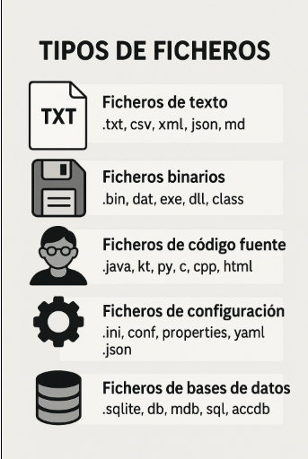

Ficheros
Un fichero es una unidad de almacenamiento de datos en un sistema informático. Se trata de un conjunto de información organizada y almacenada en un dispositivo de almacenamiento (secuencia de bytes), como un disco duro, una memoria USB o un servidor en la nube. A los datos que se guardan en ficheros se llaman datos persistentes, porque persisten más allá de la ejecución de la aplicación que los trata.
Características de un fichero
- Nombre: Cada fichero tiene un nombre único dentro de su directorio.
- Extensión: Muchos ficheros tienen una extensión que indica su tipo (por ejemplo, .txt para texto, .jpg para imágenes, .pdf para documentos, .dat para binarios...).
- Ubicación: Se encuentran organizados en carpetas o directorios dentro del sistema de archivos.
- Contenido: Puede ser texto, imágenes, vídeos, código fuente, bases de datos, etc.
- Permisos de acceso: Se pueden configurar para permitir o restringir la lectura, escritura o ejecución a determinados usuarios o programas.
Tipos de ficheros
- Ficheros de texto: Contienen datos en formato legible por humanos (.txt, .csv, .json, .xml).
- Ficheros binarios: Almacenan información en un formato no legible directamente (.exe, .jpg, .mp3, .dat).
- Ficheros de código fuente: Contienen instrucciones escritas en lenguajes de programación (.java, .kt, .py).
- Ficheros de configuración: Almacenan parámetros de configuración de programas (.ini, .conf, .properties).
- Ficheros de bases de datos: Se utilizan para almacenar grandes volúmenes de datos estructurados (.db, .sql).

Principales usos de la persistencia de datos en ficheros
El uso de ficheros para la persistencia de datos es una alternativa sencilla y eficiente cuando no se requiere una base de datos completa:
- Guardar ajustes de una aplicación en archivos de configuración (.properties, .ini, .json).
- Mantener un historial de eventos o errores en un sistema (.log).
- Guardar información de usuario o estado de la aplicación sin necesidad de una base de datos (.csv, .json).
- Comunicación entre programas mediante archivos JSON o XML.
- Aplicaciones que funcionan sin internet o sin una base de datos centralizada.